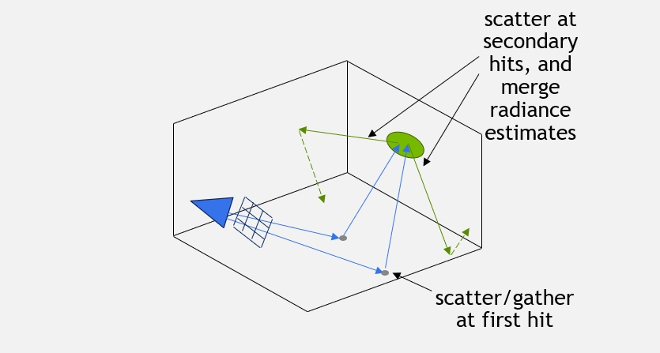

Top: Contents
- In order to highlight the flexibility of our PTLib library, we will now describe an implementation of the Fast path space filtering by jittered spatial hashing algorithm by Binder et al. built on top of this framework.
- The main idea behind this algorithm is that rather than utilizing the sampled paths directly and splatting them to their single originating pixel only, they are cut somewhere in the middle (the original paper was doing this at the first bounce, we extend this to an arbitrary vertex), and the contributions at the specified vertex are merged and averaged (or "filtered") into a discrete spatial hash. This way, the filtered value averaged into a single cell will be virtually "splat" to all paths incident to that cell, and consequently to all the corresponding pixels (dramatically decreasing variance at the expense of some bias, or error). The whole process is illustrated for two paths in the following figure: 
- Now, taking a look at Fermat's implementation in psfpt_impl.h, you'll notice that the overall structure is pretty similar to that of our Hello World prototype path-tracer, and even more to that of the PTLib-based Path Tracer. Skipping some details, you'll notice there is again a context class definition:
template <typename TDirectLightingSampler>{PSFRefQueue ref_queue; // a queue of PSF referencesHashMap psf_hashmap; // the PSF hashmapfloat4* psf_values; // the PSF valuesTDirectLightingSampler dl; // the direct-lighting sampler};
- The main news here is the fact we inherited it from PTContextBase and PTContextQueues, and added a few fields:
- an additional "references queue"
- a hashmap and the corresponding values
- and a direct lighting sampler.
- The additional queue is needed to store references to the hashmap cells. These references represent forward paths sampled from the camera that land on some cell, with their corresponding path weight (i.e. the throughput the path was carrying until it hit the cell, properly divided by its sampling pdf). We need to keep these references around because we are going to employ a two pass algorithm: a first one in which full paths are sampled and cut at the specified vertex, inserting their outgoing radiance into the corresponding hash cell, and a final one in which all the cell references created in the first pass are looked up and splat on screen. This two-stage separation is needed to make sure that all samples are filtered together before we actually splat them.
- The beginning of the PSFPT::render() method should also look fairly familiar:
const uint2 res = renderer.res();
const uint32 n_pixels = res.x * res.y;
// carve an arena out of the pre-allocated memory pool
cugar::memory_arena arena( m_memory_pool.ptr() );
// alloc all the queues
PTRayQueue input_queue;
PTRayQueue scatter_queue;
PTRayQueue shadow_queue;
PSFRefQueue ref_queue;
m_options,
n_pixels,
input_queue,
scatter_queue,
shadow_queue,
ref_queue,
arena );
// fetch a view of the renderer
RenderingContextView renderer_view = renderer.view(instance);
// instantiate our vertex processor
PSFPTVertexProcessor vertex_processor( m_options.firefly_filter );
- In fact, the only news here should be the very last two lines:
// instantiate our vertex processor
PSFPTVertexProcessor vertex_processor( m_options.firefly_filter );
i.e. the instantiation of a custom TPTVertexProcessor - in this case the PSFPTVertexProcessor. After that, the body of the render method is almost trivial:
PSFPTContext<DirectLightingMesh> context;
context.options = m_options;
context.in_bounce = 0;
context.in_queue = input_queue;
context.scatter_queue = scatter_queue;
context.shadow_queue = shadow_queue;
context.sequence = m_sequence.view();
context.frame_weight = 1.0f / float(renderer_view.instance + 1);
context.device_timers = device_timers;
context.bbox = m_bbox;
context.dl = DirectLightingMesh( mesh_light );
context.ref_queue = ref_queue;
context.psf_hashmap = HashMap(
HASH_SIZE,
m_psf_hash.m_keys.ptr(),
m_psf_hash.m_unique.ptr(),
m_psf_hash.m_slots.ptr(),
m_psf_hash.m_size.ptr()
);
context.psf_values = m_psf_values.ptr();
// initialize the shading cache
if ((instance % m_options.psf_temporal_reuse) == 0)
m_psf_hash.clear();
// reset the reference queue size
cudaMemset(context.ref_queue.size, 0x00, sizeof(uint32));
CUDA_CHECK(cugar::cuda::sync_and_check_error("clear reference queue"));
// perform the actual path tracing
path_trace_loop( context, vertex_processor, renderer, renderer_view, stats );
// blend-in the PSF references
if (pass_type == PSFPT::kFinalPass)
{
uint32 ref_queue_size;
cudaMemcpy(&ref_queue_size, context.ref_queue.size, sizeof(uint32), cudaMemcpyDeviceToHost);
psf_blending(ref_queue_size, context, renderer_view);
CUDA_CHECK(cugar::cuda::sync_and_check_error("psf blending"));
}
- All path tracing and kernel dispatch complexity has been absorbed into PTLib! Particularly, it has been absorbed in the path_trace_loop() method.
- All of it, except for some crucial details. The details specified by our PSFPTVertexProcessor policy class, the class saying what exactly needs to be done with the path vertices generated by PTLib itself.
- The first method this class is responsible for implementing is the preprocess_vertex() method, which is called each time a new path vertex is created, before anything is actually done at that very vertex. Here, we use this to perform our jittered spatial hashing of the vertex position and normal coordinates, and retrieve the corresponding hash cell:
// preprocess a vertex and return some packed vertex info
//
template <typename TPTContext>
FERMAT_DEVICE
uint32 preprocess_vertex(
TPTContext& context, // the current context
const float cone_radius, // the current cone radius
const uint32 prev_vertex_info, // the packed vertex info at the previous vertex
const float p_prev) // the scattering solid angle probability at the previous vertex
{
// access the vertex info we returned at the previous vertex along this path (sampled from the eye)
CacheInfo prev_cache_info(prev_vertex_info);
// determine the cache slot
uint32 new_cache_slot = prev_cache_info.pixel;
bool new_cache_entry = false;
// We should create a new cache entry if and only if:
// 1. none has been created so far along this path
// 2. the depth is sufficient
// 3. other conditions like the hit being at a minimum distance and the sampling probability being low enough (indicating a rough-enough interaction) hold
if (prev_cache_info.is_invalid() &&
context.in_bounce >= context.options.psf_depth &&
p_prev < context.options.psf_max_prob)
{
}
return CacheInfo(new_cache_slot, 0, new_cache_entry);
}
- The first step is computing some random numbers to jitter the spatial hashing itself:
const uint32 pixel_hash = pixel_info.pixel + renderer.instance * renderer.res_x * renderer.res_y;
const float jitter[6] = {
cugar::randfloat( 0u, pixel_hash ),
cugar::randfloat( 1u, pixel_hash ),
cugar::randfloat( 2u, pixel_hash ),
cugar::randfloat( 3u, pixel_hash ),
cugar::randfloat( 4u, pixel_hash ),
cugar::randfloat( 5u, pixel_hash ),
};
- After that, computing the hash key is fairly straightforward:
// compute a spatial hash
const float cone_scale = context.options.psf_width;
const float filter_scale = (context.in_bounce == 0.0f ? 2.0f : 1.0f);
// compute a hash key based on jittered hashing of the position and normal coordinates
const uint64 shading_key = spatial_hash(
pixel_info.pixel,
ev.geom.position,
dot(ev.in, ev.geom.normal_s) > 0.0f ? ev.geom.normal_s : -ev.geom.normal_s,
ev.geom.tangent,
ev.geom.binormal,
context.bbox,
jitter,
cone_radius * cone_scale,
filter_scale);
- and so is insertion into the hashmap:
// insert into the hashmap using the computed hash key
{
FERMAT_ASSERT(new_cache_slot < cugar::cuda::load<cugar::cuda::LOAD_VOLATILE>(context.psf_hashmap.count));
// initialize the cache entry
context.psf_values[new_cache_slot] = make_float4(0.0f, 0.0f, 0.0f, 0.0f);
}
FERMAT_ASSERT(new_cache_slot < cugar::cuda::load<cugar::cuda::LOAD_VOLATILE>(context.psf_hashmap.count));
// increment the sample counter
cugar::atomic_add(&context.psf_values[new_cache_slot].w, 1.0f);
- Finally, we need to append a reference to this newly created cell into the PSF splatting queue, and finalize, marking our cell as new:
// add two "references" to this sample, weighted by modulate( w, ev.bsdf.diffuse )
context.ref_queue.warp_append(
pixel_info,
CacheInfo(new_cache_slot, ALL_COMPS, 0),
(pixel_info.comp & Bsdf::kDiffuseMask) ? w_mod : cugar::Vector4f(0.0f),
(pixel_info.comp & Bsdf::kGlossyMask) && context.in_bounce ? w_mod : cugar::Vector4f(0.0f)
// at the first bounce, cache entries are only accumulated into the diffuse channel
);
new_cache_entry = true;
- Notice that the method returns an integer, which is later passed to all other methods as vertex_info. Here we use this integer to pack all the information we'll need later on, that is to say: the hash cell index, a bit flag indicating whether this hash cell has been newly created, i.e. this is the first diffuse vertex along the path where filtering is performed, or whether the cell was already looked-up by some previous vertex, and some extra flags indicating the components this path is sampling (e.g. diffuse or glossy). For convenience, we use a simple helper class to wrap this information in an easily accessible bit field:
union CacheInfo
{
const static uint32 INVALID = 0xFFFFFFFFu;
const static uint32 INVALID_SLOT = 0xFFFFFFFFu & ((1u << 29) - 1u);
FERMAT_HOST_DEVICE CacheInfo() : packed(INVALID) {}
FERMAT_HOST_DEVICE CacheInfo(const uint32 _packed) : packed(_packed) {}
FERMAT_HOST_DEVICE CacheInfo(const uint32 _pixel, const uint32 _comp, const uint32 _new_entry) : pixel(_pixel), comp(_comp), new_entry(_new_entry){}
FERMAT_HOST_DEVICE
bool is_invalid() const { return pixel == INVALID_SLOT; }
FERMAT_HOST_DEVICE
bool is_valid() const { return pixel != INVALID_SLOT; }
uint32 packed;
struct
{
uint32 pixel : 29;
uint32 comp : 2;
uint32 new_entry : 1;
};
FERMAT_HOST_DEVICE operator uint32() const { return packed; }
};
- The next method specifies how to compute the Next-Event Estimation weights, separately for diffuse and glossy interactions. Here we have to distinguish a few cases:
- the case where this path vertex comes before any hashing is done (as seen from the eye/camera): in this case we'll do business as usual, compute the weights as one would normally do and simply accumulate the resulting samples directly to the framebuffer (though this is done in a separate method)
- the case where this path vertex is the vertex where hashing/filtering is done: in this case, we want to accumulate its demodulated diffuse contribution to the hashmap (where by demodulated we mean that we'll remove any high frequency details introduced by the diffuse texture), while we'll accumulate its glossy contribution directly to the framebuffer (as glossy reflections are generally too high-frequency to be cached and filtered in path space)
- the case where this path vertex comes after the vertex where caching is done: in this case again we'll do business as usual in terms of weight calculation, except we'll add both contributions to the corresponding hash cell.
- Again, this method only takes care of computing the weights, while the actual sample accumulations are done in a different method we'll see in a moment. So in practice, as the first and last case result in the same exact weights and only the central case is different, we can group them into two cases only:
template <typename TPTContext>
FERMAT_DEVICE
void compute_nee_weights(
const TPTContext& context,
const RenderingContextView& renderer,
const PixelInfo pixel_info,
const uint32 prev_vertex_info,
const uint32 vertex_info,
const EyeVertex& ev,
const cugar::Vector3f& f_d,
const cugar::Vector3f& f_g,
const cugar::Vector3f& w,
const cugar::Vector3f& f_L,
cugar::Vector3f& out_w_d,
cugar::Vector3f& out_w_g,
uint32& out_vertex_info)
{
const CacheInfo new_cache_info(vertex_info);
const bool new_cache_entry = new_cache_info.new_entry;
const CacheInfo out_cache_info = context.in_bounce < context.options.psf_depth ? CacheInfo(CacheInfo::INVALID) :
new_cache_entry ?
CacheInfo(new_cache_info.pixel, DIFFUSE_COMP, 0) : // cache the diffuse component only
CacheInfo(new_cache_info.pixel, ALL_COMPS, 0); // cache both diffuse and glossy components
out_vertex_info = out_cache_info;
// Three cases:
// 1. we are not doing any caching:
// 1.a: bounce = 0: we will accumulate the diffuse and glossy components separately to the frame-buffer
// 1.b: bounce > 0: we will accumulate the sum of the components to a single channel of the frame-buffer
// 2. this is a new cache entry (i.e. this is the first D vertex along a path), we demodulate the diffuse BSDF:
// out_w_d = f_d * f_L * G * mis_w
// and accumulate the glossy component to the glossy framebuffer
// 3. we are caching both the diffuse and glossy components:
// out_w_d = w * f_d * f_L * G * mis_w,
// out_w_g = w * f_g * f_L * G * mis_w;
// or rather, we could perform a single accumulation using (out_w_d + out_w_g) * f_L * G * mis_w
//
// Since in practice 1. and 3. end up in the same weights, this reduces to two cases:
// 1. this is a new and valid cache entry
// 2. all of the others
if (new_cache_entry && out_cache_info.is_valid())
{
out_w_d = demodulate( f_d, cugar::Vector4f(ev.material.diffuse).xyz() ) * f_L;
out_w_g = f_g * w.xyz() * f_L;
}
else
{
out_w_d = f_d * w.xyz() * f_L;
out_w_g = f_g * w.xyz() * f_L;
}
}
- The actual sample accumulation follows from the above mentioned logic. Conceptually, it would be even simpler than it ends up being, except this renderer also keeps track of separate diffuse and glossy channels, which requires some extra special casing based on the path type.
template <typename TPTContext>
FERMAT_DEVICE
void accumulate_nee(
const TPTContext& context,
RenderingContextView& renderer,
const PixelInfo pixel_info,
const uint32 vertex_info,
const bool shadow_hit,
const cugar::Vector3f& w_d,
const cugar::Vector3f& w_g)
{
FBufferView& fb = renderer.fb;
FBufferChannelView& composited_channel = fb(FBufferDesc::COMPOSITED_C);
FBufferChannelView& direct_channel = fb(FBufferDesc::DIRECT_C);
FBufferChannelView& diffuse_channel = fb(FBufferDesc::DIFFUSE_C);
FBufferChannelView& specular_channel = fb(FBufferDesc::SPECULAR_C);
// unpack the pixel index & sampling component
const uint32 pixel_index = pixel_info.pixel;
const uint32 pixel_comp = pixel_info.comp;
const float frame_weight = context.frame_weight;
// access the packed vertex info
const CacheInfo cache_info(vertex_info);
if (shadow_hit == false)
{
// check if the cache cell is valid
if (cache_info.is_valid())
{
}
else
{
}
}
}
- You can see that there are again basically two cases: the case there is a valid cache_info, specifying a hash cell to accumulate the sample to, and the opposite case, in which the sample has to be accumulated directly to the framebuffer (which might happen if no diffuse vertex has been found along the path, or the required number of bounces for path-space filtering has not yet been reached). In the first case, we need to first determine which components to add the cache - as specified by cache_info.comp - and then issue an atomic for each of the sample value's components. The atomics are needed to make sure conflicting writes to the same cell are appropriately resolved:
const uint32 cache_slot = cache_info.pixel;
// check whether to add both components to the cache or just the diffuse one
const cugar::Vector3f w = (cache_info.comp == DIFFUSE_COMP) ? w_d : w_d + w_g;
cugar::atomic_add(&context.psf_values[cache_slot].x, w.x);
cugar::atomic_add(&context.psf_values[cache_slot].y, w.y);
cugar::atomic_add(&context.psf_values[cache_slot].z, w.z);
- In case only the diffuse component was accumulated to the cache cell, we need to add the remaining glossy component to the framebuffer, concluding the treatment of the first case:
// if the glossy component was left out, we need to add it to the framebuffer
if (cache_info.comp == DIFFUSE_COMP)
{
add_in<false>(composited_channel, pixel_index, clamp_sample( w_g ), frame_weight);
// select the right channel
FBufferChannelView& fb_channel = context.in_bounce == 0 || (pixel_comp & Bsdf::kGlossyMask) ?
specular_channel :
diffuse_channel;
add_in<true>(fb_channel, pixel_index, clamp_sample( w_g ), context.frame_weight);
}
- The second case is conceptually simpler, and more or less the same of what we did in the standard path tracer:
add_in<false>(composited_channel, pixel_index, clamp_sample( w_d + w_g ), frame_weight);
if (context.in_bounce == 0)
{
// accumulate the per-component values to the respective output channels
add_in<true>(diffuse_channel, pixel_index, clamp_sample( w_d ), context.frame_weight);
add_in<true>(specular_channel, pixel_index, clamp_sample( w_g ), context.frame_weight);
}
else
{
// accumulate the aggregate value to the proper output channel (only one will be true)
if (pixel_comp & Bsdf::kDiffuseMask) add_in<true>(diffuse_channel, pixel_index, clamp_sample( w_d + w_g ), frame_weight);
if (pixel_comp & Bsdf::kGlossyMask) add_in<true>(specular_channel, pixel_index, clamp_sample( w_d + w_g ), frame_weight);
}
- Similar logic applies to the calculation of scattering weights; basically, everything's done as usual in a path tracer, except if we are filtering at the current vertex, in which case we demodulate the weight in order to filter the demodulated path contribution:
template <typename TPTContext>
FERMAT_DEVICE
void compute_scattering_weights(
const TPTContext& context,
const RenderingContextView& renderer,
const PixelInfo pixel_info,
const uint32 prev_vertex_info,
const uint32 vertex_info,
const EyeVertex& ev,
const uint32 out_comp,
const cugar::Vector3f& g,
const cugar::Vector3f& w,
cugar::Vector3f& out_w,
uint32& out_vertex_info)
{
const CacheInfo prev_cache_info(prev_vertex_info);
const CacheInfo new_cache_info(vertex_info);
const uint32 new_cache_slot = new_cache_info.pixel;
const bool new_cache_entry = new_cache_info.new_entry;
const CacheInfo out_cache_info = prev_cache_info.is_invalid() && (out_comp & Bsdf::kGlossyMask) ?
prev_cache_info : // retain the invalid cache location
CacheInfo(new_cache_slot, ALL_COMPS, 0); // cache both diffuse and glossy components
out_vertex_info = out_cache_info;
// if this is a new "diffuse cache ray", i.e. if new_cache_entry && (out_comp & Bsdf::kDiffuseMask),
// we have to demodulate the BSDF weight. This will be compensated by a correctly weighted reference to the queue entry.
// The proper solution would be to use SH to encode incoming radiance.
if (new_cache_entry && (out_comp & Bsdf::kDiffuseMask))
out_w = demodulate(g, cugar::Vector4f(ev.material.diffuse).xyz());
else
out_w = g * w.xyz();
}
- Finally, the last method prescribes what to do with emissive path vertices, and again we apply a logic similar to the above: if the hash cell computed at the previous path vertex is invalid, we splat the sample directly to the framebuffer, otherwise we splat the sample into the hashmap. The reason why we here look at the previous path vertex is that we are looking at emission at the current vertex towards the previous one, sampling what is basically direct lighting at the previous vertex along the path:
template <typename TPTContext>
FERMAT_DEVICE
void accumulate_emissive(
const TPTContext& context,
RenderingContextView& renderer,
const PixelInfo pixel_info,
const uint32 prev_vertex_info,
const uint32 vertex_info,
const EyeVertex& ev,
const cugar::Vector3f& out_w)
{
FBufferView& fb = renderer.fb;
FBufferChannelView& composited_channel = fb(FBufferDesc::COMPOSITED_C);
FBufferChannelView& direct_channel = fb(FBufferDesc::DIRECT_C);
FBufferChannelView& diffuse_channel = fb(FBufferDesc::DIFFUSE_C);
FBufferChannelView& specular_channel = fb(FBufferDesc::SPECULAR_C);
// access the vertex info from the previous vertex
const CacheInfo prev_cache_info(prev_vertex_info);
// clamp the sample value to avoid extreme fire-flies
const cugar::Vector3f clamped_out_w = clamp_sample( out_w );
// unpack the pixel index & sampling component
const uint32 pixel_index = pixel_info.pixel;
const uint32 pixel_comp = pixel_info.comp;
const float frame_weight = context.frame_weight;
// accumulate to the image only if prev_cache_info is invalid
if (prev_cache_info.is_invalid())
{
add_in<false>(composited_channel, pixel_index, clamped_out_w, frame_weight);
// accumulate the per-component value to the proper output channel
if (context.in_bounce == 0)
add_in<false>(direct_channel, pixel_index, clamped_out_w, frame_weight);
else
{
if (pixel_comp & Bsdf::kDiffuseMask) add_in<true>(diffuse_channel, pixel_index, clamped_out_w, frame_weight);
if (pixel_comp & Bsdf::kGlossyMask) add_in<true>(specular_channel, pixel_index, clamped_out_w, frame_weight);
}
}
else
{
// accumulate to the cache entry
cugar::atomic_add(&context.psf_values[prev_cache_info.pixel].x, clamped_out_w.x);
cugar::atomic_add(&context.psf_values[prev_cache_info.pixel].y, clamped_out_w.y);
cugar::atomic_add(&context.psf_values[prev_cache_info.pixel].z, clamped_out_w.z);
}
}
- Here we go, this is pretty much all the magic needed to perform path space filtering within our PTLib framework. Hopefully, this speaks to its flexibility...
Of course, there's many important details we just skimmed over, like the actual implementation of the massively parallel hashmap, but thankfully this is all provided by the underlying CUGAR library.
- So here's a comparison of what you get with standard path tracing (top), and path-space filtering (bottom) at 32 samples per pixel. Ideally, you should also think this coding excercise was worth the effort.


Next: BPTLib